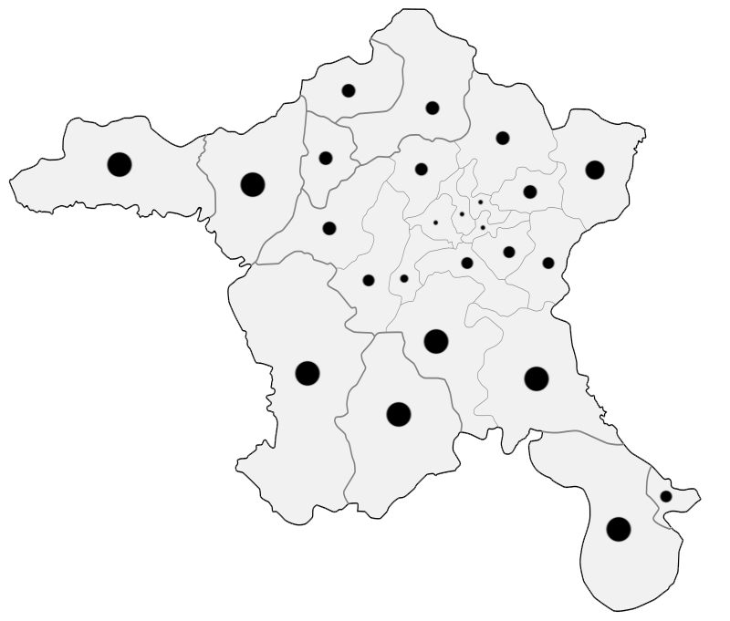

Click here to go back
Click on the dots to learn the name of the district!
Since it doesn't show the name before clicking, you can also use this map to memorize the districts

Written by Ümit Mete Şahin
Contact me via:
e-mail
oplog.io